宮川町の京都市広報板の町名表示を見てみよう
京都市の各地には「広報板」が設置されており、その多くは町名の表示を伴っています。町名の書き方には、区と町だけを記すシンプルなものもあれば、「〇〇通〇〇上る」のような通り名による案内を含む長いものもあります。

宮川町は鴨川左岸の四条・五条間に位置する花街の一つであり、団栗通〜五条通を南北に走る通り「宮川筋」沿いに形成されており、宮川町自体も公称町名としては宮川筋と呼ばれます。通りとしての宮川筋（宮川町通）は北から南に下がっていくと松原通で西に折れており（濃青）、すぐ南に続く道は新宮川筋（新宮川町通）という別の通りとして扱われます（淡青）。町名としての宮川筋は、四条大橋に端を発して宮川町通沿いに、四条通に接する一丁目から五条通に接する八丁目までに分かれています。新宮川町通沿いの地域は、北から西御門町、西川原町、山田町、田中町、東橋詰町と分かれています。
これらの地域では、図に赤色で示した位置に京都市広報板を見つけることができます。これらの広報板の町名表示には一癖あるものが多いことに気がついたので、ここで見比べてみることにしました。
宮川筋の京都市広報板
宮川筋には、七丁目以外の全てに広報板があるようです。
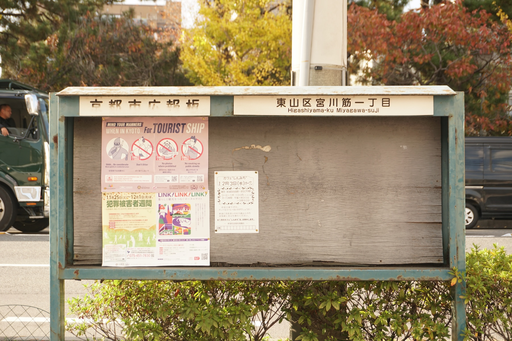
東山区宮川筋一丁目
Higashiyama-ku Miyagawa-suji
町名の書き方は普通ですが、広報板がいきなり特殊ですね。初めて見ました。町名は普通、とは言っても、ローマ字部分を見ると「一丁目」がどこへやらですね。
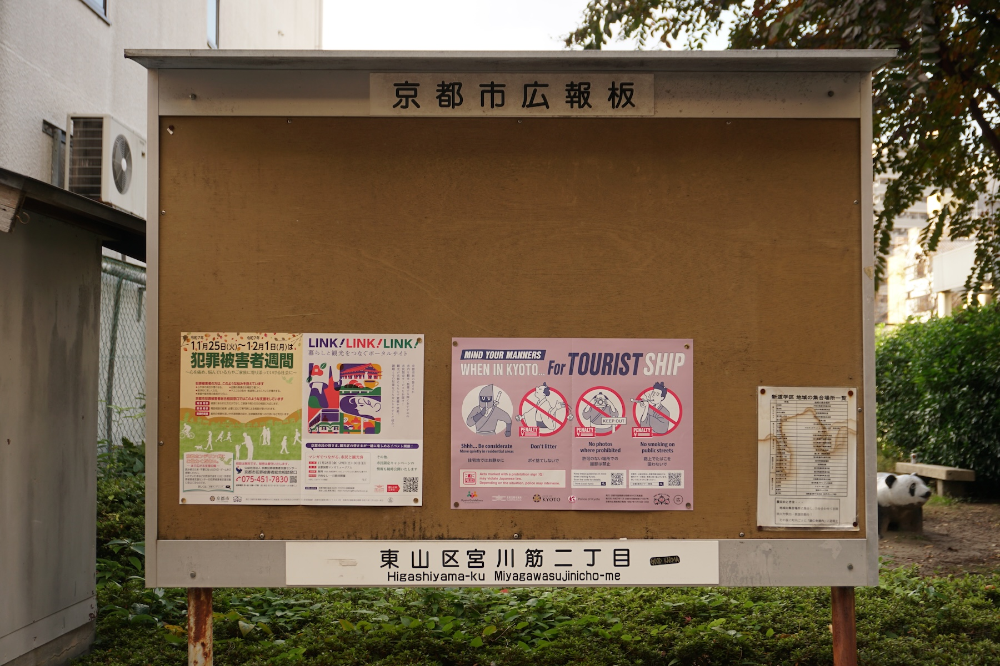
東山区宮川筋二丁目
Higashiyama-ku Miyagawasujinicho-me
よくある広報板に近いです。「宮川筋二丁目」はローマ字にすると一語扱いらしいのが引っかかります。同じくスペーシングの話として、「（東山）区宮（川筋）」の間にスペースがないですね？
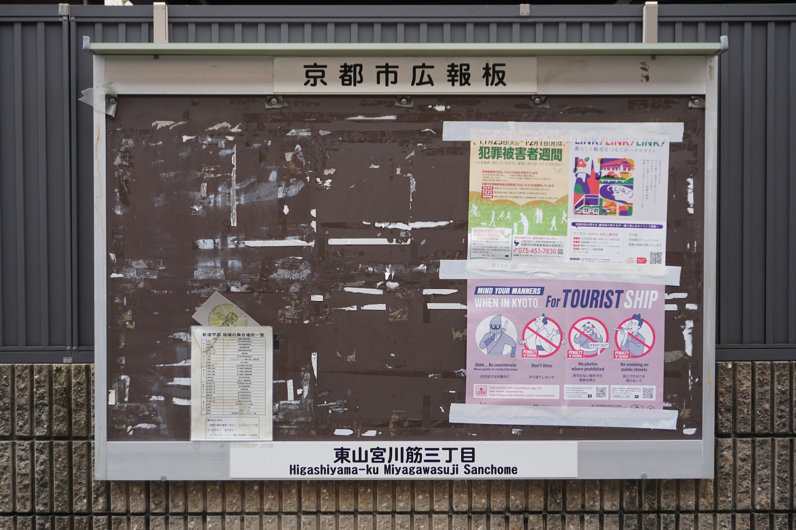
東山宮川筋三丁目
Higashiyama-ku Miyagawasuji Sanchome
よくある、新し目の広報板です。二丁目と比べると町名表示のフォントが違いますね。……東山「区」？
ローマ字では「三丁目」が分けて書かれるようになりました。
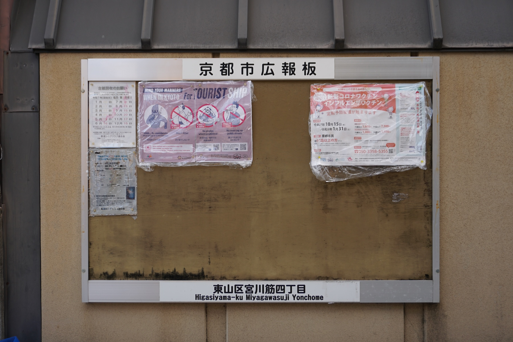
東山区宮川筋四丁目
Higasiyama-ku Miyagawasuji Yonchome
普通……か？ 「Higasiyama-ku」なのは訓令式っぽいなと思ったものの、その後が「Yonchome」なので多分ただの脱字ですね。
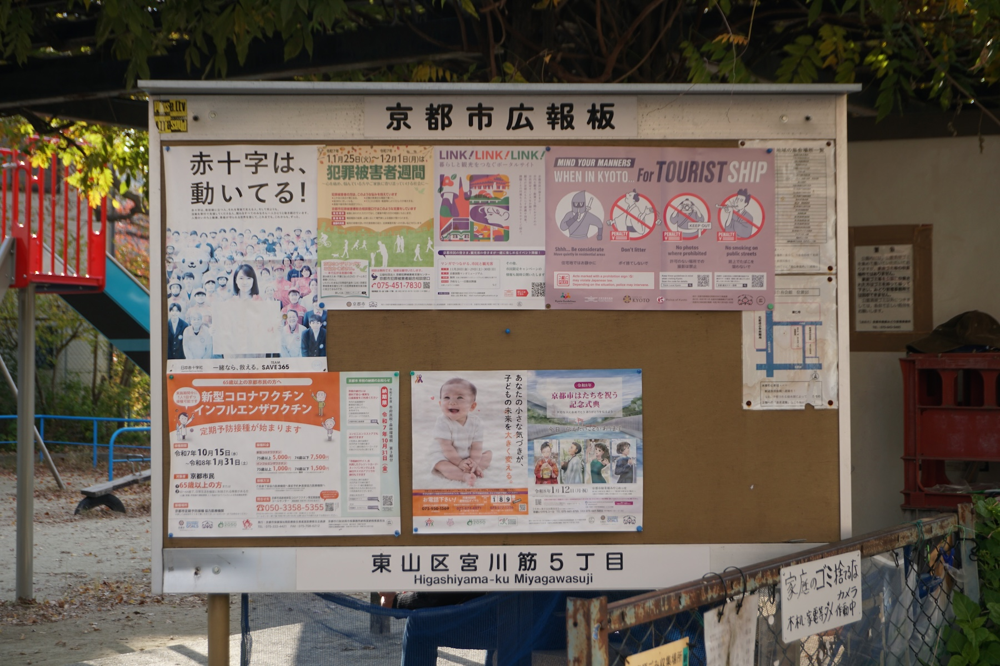
東山区宮川筋５丁目
Higashiyama-ku Miyagawasuji
アラビア数字ですね？ フォントも一・二丁目のものとも三・四丁目のものとも違う気がします。ローマ字ではまた「丁目」がどこかに行きましたが Miyagawa-suji ではないから一丁目とは別らしい。
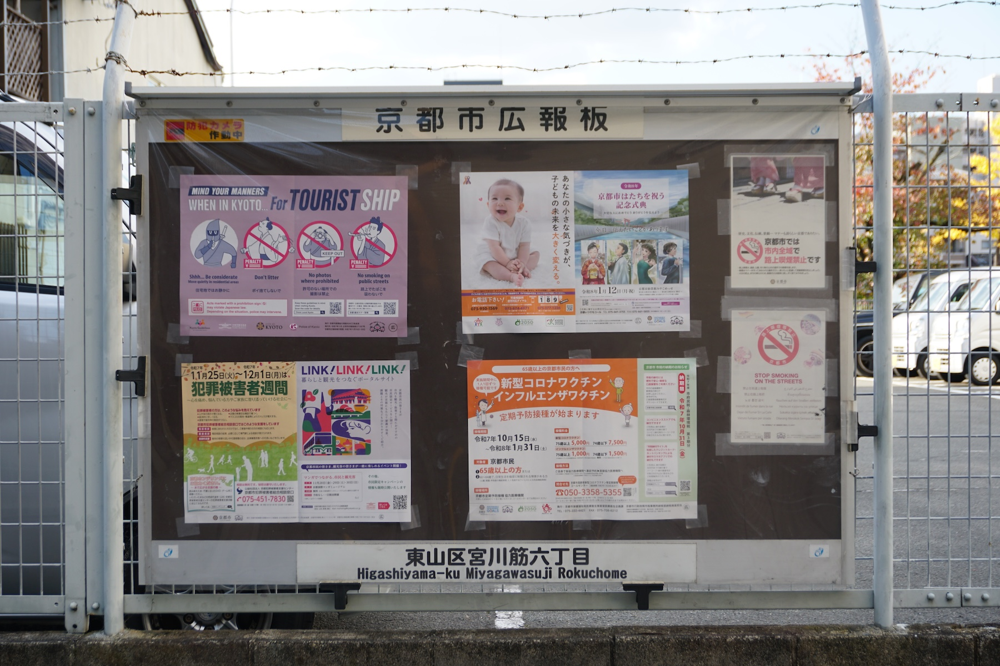
東山区宮川筋六丁目
Higashiyama-ku Miyagawasuji Rokuchome
見慣れたものです。三丁目（の本来の姿）と同じですかね。
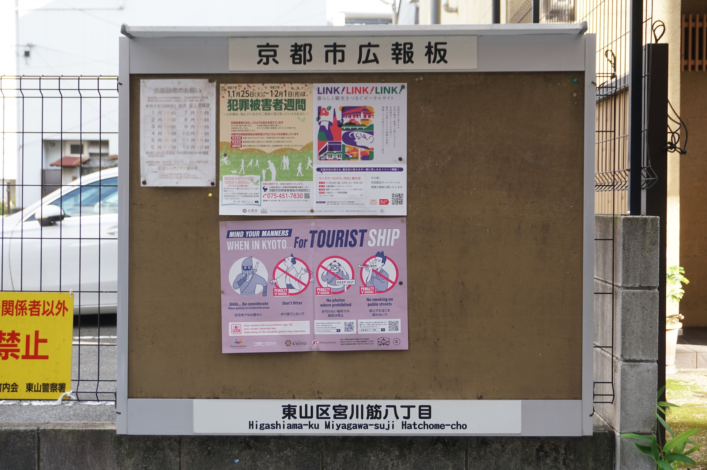
東山区宮川筋八丁目
Higashiama-ku Miyagawa-suji Hatchome-cho
縦横比が違う広報板ですが、町名部分は普通です。ローマ字部分を無視すれば。「Higashiama-ku」←うん？ 「Hatchome-cho」←なに？
ちょっと比較してみましょう。他の広報板と比べて異なる「癖」がある部分には下線を引きました。
……うーんカオス。六丁目以外にはどこかしら癖があるのが分かります。ただ癖がないのが六丁目だけとなると、それはそれで癖があるんじゃないでしょうか。
ここまで団栗通から南を見てきましたが、北に戻って川端通の東側を四条通から団栗通へと下がっていくと、町は中之町→宮川筋一丁目→井出町→宮川筋一丁目→宮川筋二丁目→……と変わります。井出町は川端通に突き出している部分を除けば有名な通りに面しておらず、広報板も路地の中にありました。
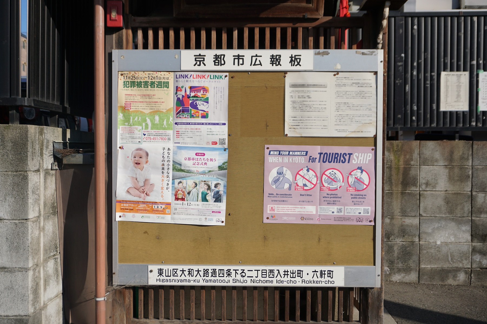
東山区大和大路通四条下る二丁目西入井出町・六軒町
Higashiyama-ku Yamatooji Shijo Nichome Ide-cho • Rokken-cho
長い。京都らしい町名表示ですね。
ところで、「団栗通大和大路西入」でもいい気がするんですが、そうではなく四条から参照されています。なんでだろう。類例として、柿町通に面する山城町でも「松原下る二丁目」という書き方がされています（→Google ストリートビュー）。
新宮川筋の京都市広報板
新宮川筋には、前述の通り西御門町、西川原町、山田町、田中町、東橋詰町の五つの町があります。このうち東橋詰町は宮川町通に架かっていますが、こちらで扱うことにします。
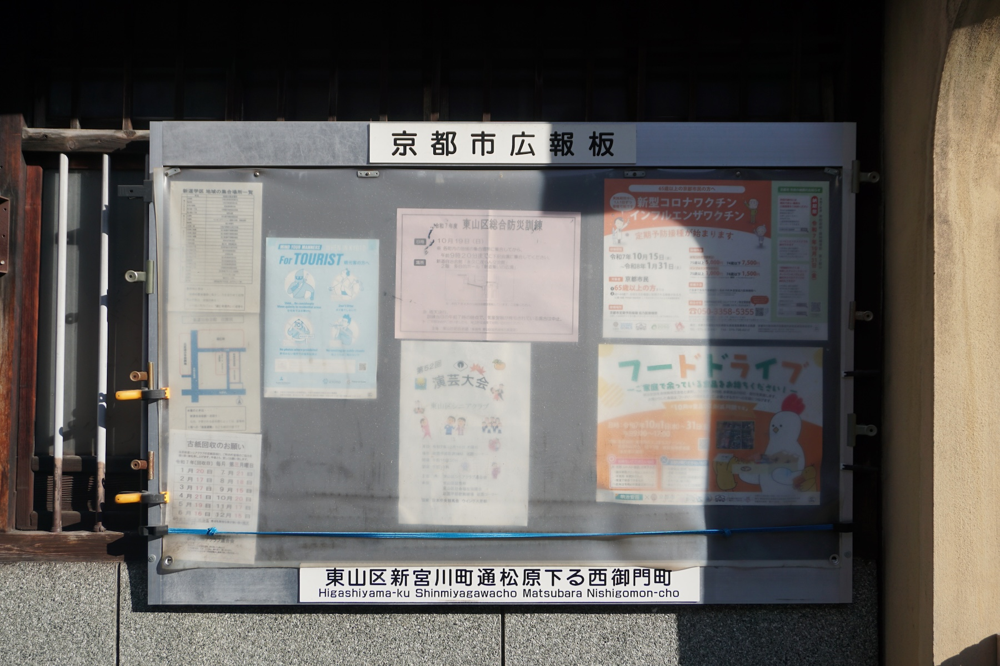
東山区新宮川町通松原下る西御門町
Higashiyama-ku Shinmiyagawacho Matsubara Nishigomon-cho
「新宮川町通」の名前で、通り名による記述をしています。「新宮川町通」の「通」とか、「下る」とかはローマ字表記に反映されないんですね。井出町の広報板を見返してみると、ここと同様に「通」「下る」「西入」が全て省かれています。どっちも書かれる例もある（→中京区釜座通三条上る突抜町）ので、揺れる範囲内っぽいですね。

—
西川原町にある広報板ですが、町名の表示がありません。こういうこともあります。あと、本体が縦長になりました。
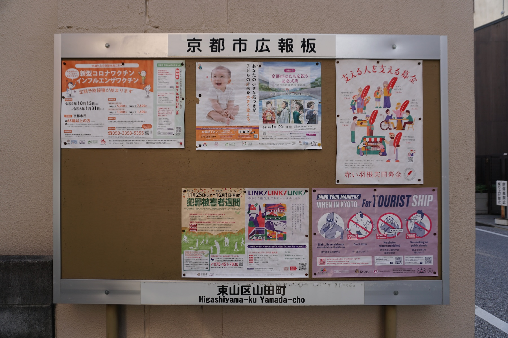
東山区山田町
Higashiyama-ku Yamada-cho
ここは通り名を使わないようです。シンプルでいいね。
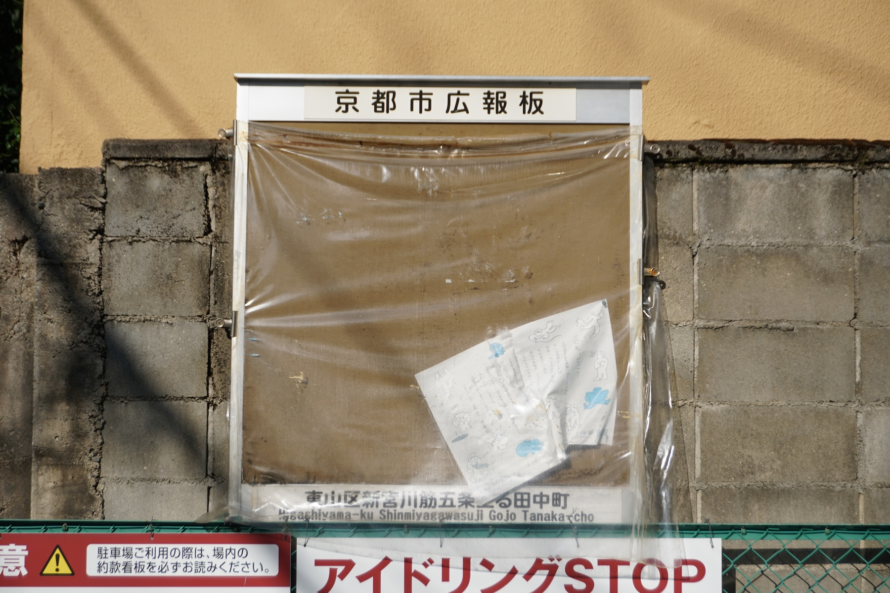
東山区新宮川筋五条上る田中町
Higashiyama-ku Shinmiyagawasuji Gojo Tanaka-cho
ちょっと見にくいですが、今度は「新宮川筋」の名前で出てきました。「筋」はローマ字に起こされるんですね。まあそうか。

東山区東詰町
Higashiyama-ku Higashihashidume-cho
ここはまた通り名を述べないタイプですね。
ただ、「東詰町」になっています。この場所は、国土地理院の地図では「東橋詰町」となっているし、すぐ下のローマ字表記からして「Higashihashidume-cho」となっていて食い違います。ミス？
おまけ
新宮川筋の広報版では、町名の他に通り名を表す表現として「新宮川筋」「新宮川町通」の両方を見ることができました。一方で、宮川筋の広報板は単に町名を「宮川筋●丁目」とするのみで通り名の表記を伴いません。しかし、他の町名表示板ではそうした町名の記述を見ることもできます。
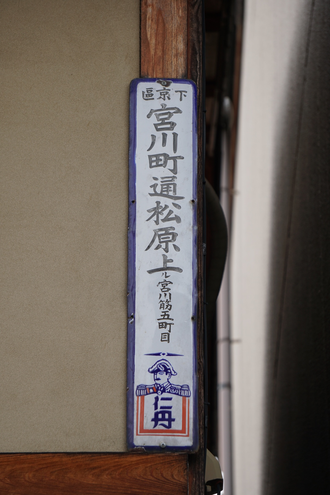
下京區宮川町通松原上ル宮川筋五丁目
仁丹の町名表示板は、上・中・下京区を中心とした京都市街の各所で見ることができます。「町名看板」と言うと仁丹が取り上げられることが多いのではないでしょうか。
ここでは「宮川町通」が通り名として使われていますね。
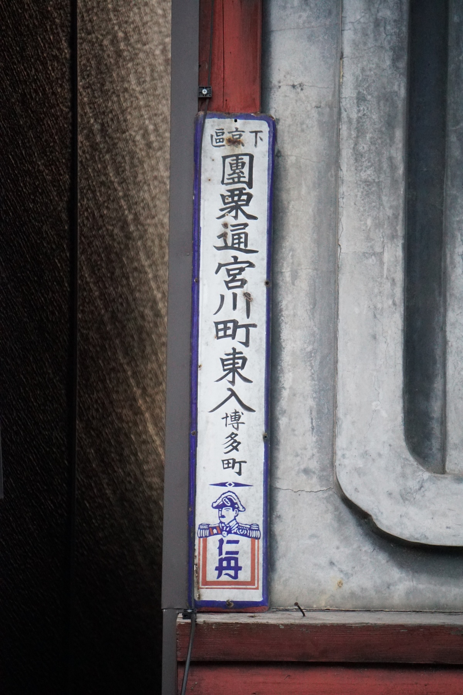
下京區團栗通宮川町東入博多町
これも仁丹ですが、やはり「宮川町（通）」です。
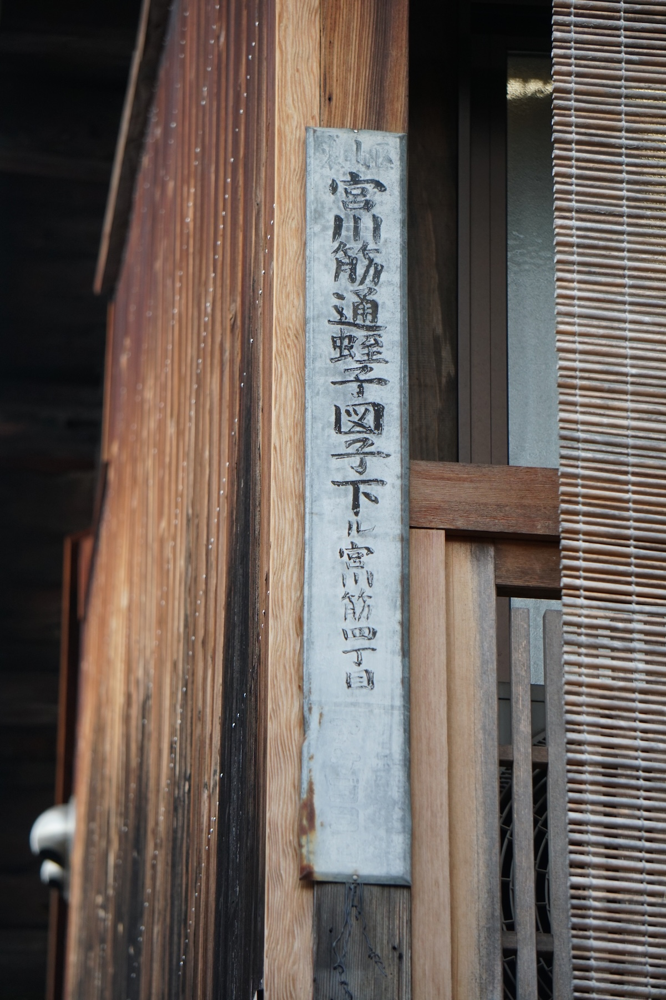
宮川筋通蛭子図子下ル宮川筋四丁目
京都の町名表示板というと仁丹が有名ですが、それ以外の主体が設置したものもときどき見かけることがあります。この看板には（かなり薄れていますが）「アケゴコロ」とありますね。通り名としては「宮川筋通」と書かれており、仁丹の「宮川町通」とも、「新宮川筋」に対応する「宮川筋」とも異なる名前ですが、検索すると確かに用例が結構出てきます。そこで「新宮川筋通」も検索に掛けてみると、同様に見つかります。どちらも民間の記事のみならず京都市の資料にも現れるので、公的にも可能な揺れの範囲内みたいですね。